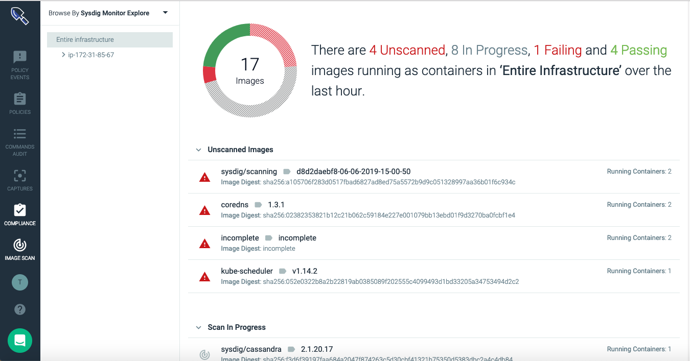

Image Scanning
Image scanning allows you to scan container images for vulnerabilities, secrets, license violations, and more. It can be used as part of a development build process as well as for scanning your container registry.
The Runtime panel provides a continuously updated report on the images in your environment.
|  |
How Sysdig Image Scanning Works
The basic set up for image scanning is simple: provide registry information where your images are stored, trigger a scan, and review the results.
Behind the scenes:
Image contents are analyzed.
The contents report is evaluated against multiple vulnerability databases.
It is then compared against default or user-defined policies.
Results are reported, both in Sysdig Secure and (if applicable) in a developer's external CI tool.
Image Contents Reported
The analysis generates a detailed report of the image contents, including:
Official OS packages
Unofficial OS packages
Configuration files
Credentials files
Localization modules and software-specific installers:
Javascript with NPM
Python PiP
Ruby with GEM
Java/JVM with .jar archives
Image metadata and configuration attributes
Vulnerability Databases Used
Sysdig Secure continuously checks against a wide range of vulnerability databases, updating the Runtime scan results with any newly detected CVEs.
The current database list includes:
Policy and Alert Refinements
Vulnerabilities are compared against the default scanning policies included with Sysdig Secure.
Users can also:
add and edit policies
assign policies to particular registries, images, or tags
whitelist or blacklist particular CVEs or images
configure scanning alerts
trigger auto-scans.
Use Cases
As an organization, you define what is an acceptable, secure, reliable image running in your environment. Image scanning for the development pipeline follows a somewhat different flow than for security personnel.
Scanning During Container Development (DevOps)
Use image scanning as part of your development pipeline, to check for best practices, vulnerabilities, and sensitive content.
To begin:
Add Registry: Add a registry where your images are stored, along with the credentials necessary to access them.
Integrate CI Tool: Integrate image scanning with an external CI tool, using the Jenkins plugin or building your own integration from a SysdigLabs solution.
Scan Image(s): The plugin or CLI integration triggers the image scanning process. Failed builds will be stopped, if so configured.
Review Results (in CI tool): Developers can analyze the results in the integrated CI tool (Jenkins).
(Optionally: add policies or refine the default policies to suit your needs, assign policies to particular images or tags, and configure alerts and notifications.)
Scanning Running Containers (Security Personnel)
Security personnel use image scanning to monitor which containers are running, what their scan status is, and whether new vulnerabilities are present in their images.
To begin:
Add Registry: Add a registry where your images are stored, along with the credentials necessary to access them.
Scan Image(s): Trigger an image scan (manually or by configuring an alert to auto-scan).
Review Results (in Sysdig Secure): Security personnel can analyze scan results in the Sysdig Secure image scanning UI.
(Optionally: add policies or refine the default policies to suit your needs, assign policies to particular images or tags, and configure alerts and notifications.)
Next Steps
Note
Image Scanning requires access to an external vulnerability feed. To ensure proper access to the latest definitions, refer to the Network and Port requirements.
Refer to the pages in this section to begin scanning the container images in your environment.
Scanning During Container Development (DevOps)
Scanning Running Containers (Security Personnel)